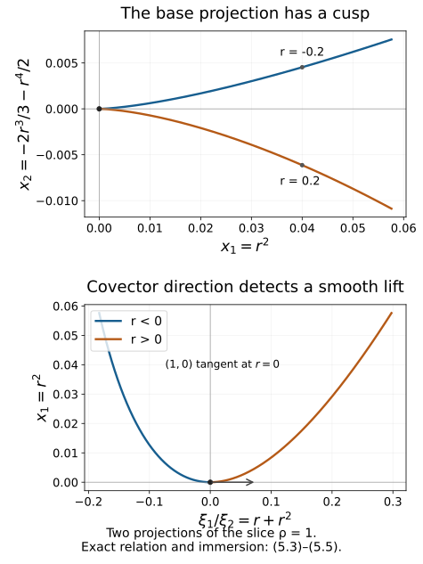

Prescribed canonical coordinates and isotropic fibers
Darboux coordinates can retain functions already known to be canonical. On a conic symplectic manifold they can also retain their degrees and specified values. This flexibility lets us straighten conic isotropic submanifolds even when their canonical one-form vanishes. We prove the coordinate extension as an actual function construction, then identify the resulting fiber model and the conormal geometry of regular base projections.
We use the symplectic and Hamiltonian conventions of Phase space and generating families. The characteristic geometry and the zero-valued momentum construction in Homogeneous submanifold normal forms provide context; its nonzero restricted one-form theorem does not supply the zero-one-form result proved here. The exact flow proofs are F0–F1, tangent flows, commuting fields and dilation conjugation, with the complete finite-coordinate flow construction. The stationary-phase foundation proves the inverse and implicit function theorems P2–P3 and the parameter fundamental theorem of calculus; the proof map binds their exact locators and earlier inputs. Exterior differentiation, pullback and Cartan's formula are proved in the differential-form foundation. The map constant-rank argument needed here is proved explicitly in Theorem 5.1 below.
The primary source is the reprint of Hörmander III, second edition (1994), Theorems 21.1.6, 21.1.9, 21.2.8 and 21.2.9 (printed 273–274, 279–281 and 287–288). We spell out the partial symplectic linear algebra, all flow equations, the exceptional final homogeneous coordinate, both isotropic induction steps, and an explicit homogeneous map from the intermediate model to a fiber. No pseudodifferential calculus is needed in this lesson.
1. Extend an isometry of alternating subspaces
Our convention on a symplectic manifold is
ιHfω=−df,{f,g}=Hfg,ω=j=1∑ndpj∧dqj.(1.1)
Thus Hpj=∂qj, Hqj=−∂pj, and {pk,qj}=δkj. The Jacobi identity follows from dω=0, and gives [Hf,Hg]=H{f,g}.
We need a linear extension that works when a prescribed subspace is degenerate for the restricted form.
Lemma 1.1 (alternating-subspace extension). Let W,W′ be symplectic vector spaces of the same dimension. If U⊂W, U′⊂W′ and L:U→U′ is a linear isomorphism preserving the restricted alternating forms, then L extends to a symplectic isomorphism W→W′.
Proof. Let K=U∩Uω, the radical of the restricted form. Its image is the corresponding radical K′. Choose a complement S to K in U. The restriction to S is nondegenerate: a vector of S orthogonal to S is also orthogonal to K, hence to U, and lies in K∩S=0. Its image S′=L(S) is similarly symplectic.
Work in the symplectic space Sω, which contains K. For a basis k1,…,kd of K, choose lj∈Sω such that
ω(ki,lj)=δij.(1.2)
These choices exist because the functionals ω(ki,⋅) are independent on Sω: nondegeneracy identifies its vectors with covectors, and the ki are independent. Put Aij=ω(li,lj) and
li=li−21j∑Aijkj.(1.3)
Then ω(ki,lj)=δij, while
ω(li,lj)=Aij−Aij/2+Aji/2=0.
Thus K+span{li} is a nondegenerate symplectic block orthogonal to S.
Perform the same construction in W′, starting with L(ki) and S′. Extend L by mapping each li to its constructed counterpart. This is an isomorphism of the resulting nondegenerate blocks. Their symplectic orthogonal complements have the same dimension; choose symplectic bases there and map one basis to the other. The direct sum of these maps is the required extension. Empty radicals and empty complements are allowed. □
In particular, independent vectors with the pairings of any indexed subset of a standard symplectic basis can be completed to a full indexed basis. Apply the lemma to their span and the span of the corresponding standard vectors. It also lets us include a prescribed radial vector, with its given pairings, in the extension.
2. Complete ordinary canonical functions without changing them
Theorem 2.1 (ordinary prescribed coordinates). Let S be a smooth symplectic manifold of dimension 2n, c∈S, and A,B⊂{1,…,n}. Suppose smooth functions qj, j∈A, and pk, k∈B, have independent differentials at c and satisfy, on a neighborhood,
{qi,qj}=0,{pk,pl}=0,{pk,qj}=δkj(2.1)
for every indicated prescribed index. Then they extend to a full canonical coordinate system (q,p) near c, with the prescribed functions retained identically.
One may also require the coordinate differential at c to be any compatible symplectic isomorphism extending their given differentials, and assign arbitrary marked values to the newly constructed functions.
Proof. The prescribed Hamilton vectors −Hqj(c), Hpk(c) are independent and have the standard indexed pairings ω(−Hqj,Hpk)=δjk. Lemma 1.1 completes them. Equivalently, choose a full canonical cotangent basis at c extending the given differentials. Fix that basis as the desired differential of our eventual chart.
At any intermediate stage the Hamilton fields of the current prescribed functions commute. Indeed their Poisson brackets in (2.1) are constants, and the Hamilton field of a constant is zero. Their values remain independent on a sufficiently small neighborhood, because their desired values at c are a subset of the chosen full basis.
Here is the required smooth equation solver. For independent commuting fields V1,…,Vd, take a small transverse section Σ through c. Their flows define
Φ(t,w)=exp(t1V1)⋯exp(tdVd)(w),w∈Σ.(2.2)
Its differential at (0,c) is invertible, so it is a coordinate chart after shrinking. Commutativity gives Vi=∂ti there. Thus equations Viu=ai, with constant ai, have the exact solution
u(Φ(t,w))=g(w)+i∑aiti.(2.3)
Choose g(c) as desired and dg(c) as the desired differential restricted to TcΣ. Explicitly, choose section coordinates w with w(c)=0, express that covector as ∑αdαdwα, and set g(w)=g(c)+∑αdαwα. This also covers a zero-dimensional section by an empty sum. Together with the equations on the Vi(c), this fixes the whole desired differential.
To add qJ, J∈/A, solve
HqjqJ=0 (j∈A),HpkqJ=δkJ (k∈B).(2.4)
To add pK, K∈/B, solve
HqjpK=−δjK (j∈A),HpkpK=0 (k∈B).(2.5)
The signs are those of (1.1). The desired tangent covector has exactly these evaluations, so (2.3) supplies it and the chosen marked value. Add the new index to A or B. All canonical relations involving the new function hold on the neighborhood, and none of the earlier functions has been altered.
There are finitely many additions. Shrink at each step to preserve independence and then use the common final neighborhood. The full 2n differentials at c are the chosen basis, so the resulting functions are coordinates. Their complete Poisson matrix is the standard matrix by (2.4)–(2.5), including their own zero brackets. Since an invertible Poisson matrix determines the symplectic form, ω=∑dpj∧dqj in this chart. □
Starting with empty A,B gives ordinary Darboux coordinates. Starting with already known functions is stronger: a subsequent coordinate construction can preserve their exact level surfaces and flows, not just a tangent plane.
For example, on T∗R2 the functions
q1=x1,p1=ξ1+x22(2.6)
are a prescribed canonical pair. An exact completion is
q2=x2,p2=ξ2+2x1x2.(2.7)
The two extra derivatives in {p1,p2} cancel. Indeed
p1dq1+p2dq2=ξ1dx1+ξ2dx2+d(x1x22).(2.8)
Differentiation proves the symplectic identity. This example is ordinary; its added momentum terms have degree zero in the original covectors and therefore are not homogeneous momentum functions.
3. Retain degrees, marked values and the radial vector
A conic symplectic manifold has a free local dilation action Mt, t>0, with Mt∗ω=tω. Let R generate the action. Then
LRω=ω,λ=ιRω,dλ=ω.(3.1)
A degree-μ function satisfies Rf=μf. Cartan's formula and (1.1) give
[R,Hf]=HRf−f=(μ−1)Hf.(3.2)
Consequently degree-zero positions have [R,Hq]=−Hq, while degree-one momenta have [R,Hp]=0.
Theorem 3.1 (homogeneous prescribed coordinates). Let qj, j∈A, and pk, k∈B, satisfy (2.1) on a conic neighborhood of c, with degrees zero and one respectively. Suppose
{Hqj(c):j∈A},{Hpk(c):k∈B},R(c)(3.3)
are jointly independent. Choose marked target values a1,…,an, b1,…,bn, agreeing with every prescribed function at c, and assume
bJ=0for some J∈/A.(3.4)
Then all the missing functions can be constructed so that their degrees, all canonical relations, and all marked values hold. They define a homogeneous symplectomorphism of conic neighborhoods of c and (a,b)∈T∗Rn∖0, retaining every prescribed function identically.
For the completed system, all momentum Hamilton fields, all position Hamilton fields except HqJ, and R are jointly independent at c.
Proof, first step: the marked linear completion. Put
εj=−Hqj(c),ek=Hpk(c),r=R(c).
Their additional radial pairings are
ω(r,εj)=0,ω(r,ek)=bk.(3.5)
Use the standard indexed vectors εj0=∂pj, ek0=∂qk in the target tangent space, and
r0=j=1∑nbjεj0.(3.6)
Condition (3.4) makes r0 independent of the prescribed target vectors: its εJ0 coefficient cannot be supplied by their span. The map taking the known vectors and r to these standard vectors and r0 is an isomorphism of their spans and preserves every pairing, by (2.1) and (3.5). Lemma 1.1 extends it to a full symplectic isomorphism L. This is our desired coordinate differential at c.
For this full tangent system, all ek0, all εj0 with j=J, and r0 are independent. Every intermediate subset of them is independent as well. We will retain these exact tangent values when adding functions.
Second step: solve the homogeneous equations for all coordinates except qJ. At the current stage the fields Hqj,Hpk,R are independent, have the commuting Hamilton relations, and satisfy (3.2). Take a transverse section Σ through c for their joint span. The map
Φ(τ,z,ℓ,w)=j∈A∏exp(τjHqj)(k∈B∏exp(zkHpk))Meℓ(w)(3.7)
is a coordinate chart after shrinking, by its independent differential at the origin. In these coordinates,
Hqj=∂τj,Hpk=∂zk,R=∂ℓ+j∈A∑τj∂τj.(3.8)
F1 of the flow prerequisite proves the variational identity and conjugation formula for these exact brackets. For the last identity, dilation conjugates a degree-zero Hamilton flow with parameter τj to one with parameter ehτj, and preserves the degree-one Hamilton flow parameter zk. This follows from (3.2), or directly from dilation of a cotangent translation. Thus the plus sign in (3.8) is fixed.
To add a position qi, i∈/A, i=J, set
qi={zi+g(w),g(w),i∈B,i∈/B.(3.9)
This satisfies (2.4) and Rqi=0. Choose g(c)=ai and its section differential to match the covector L∗dqi0. That covector has the required evaluations on the Hamilton fields and value zero on R(c), so all its components are matched.
To add a momentum pK, K∈/B, set
pK={−τK+eℓg(w),eℓg(w),K∈A,K∈/A.(3.10)
This satisfies (2.5) and RpK=pK. Choose g(c)=bK and its section differential to match L∗dpK0. Its radial evaluation is bK, exactly the derivative of (3.10) in ℓ at the origin. Every marked tangent component is therefore retained.
After either addition the enlarged Hamilton/radial list has the independent marked tangent system already chosen. Shrink so it remains independent nearby. Repeat until all momenta and all positions except qJ are constructed. The data have not required translating any homogeneous momentum by a constant.
Third step: construct the exceptional position. Theorem 2.1 completes this almost full system by an ordinary position xJ, retaining the desired differential and value aJ at c. Write xi=qi for i=J. In these ordinary canonical coordinates,
R=i∑pi∂pi+h(x,p)∂xJ,(3.11)
because Rpi=pi and Rxi=0 for i=J. Contracting ω gives
ιRω=i∑pidxi−hdpJ.
Equation (3.1) then implies dh∧dpJ=0. Since these are full coordinates, every partial derivative of h except possibly its pJ derivative vanishes. On a small coordinate product h=h(pJ). Moreover h(bJ)=RxJ(c)=0, by the chosen radial-compatible differential.
Shrink to an interval of pJ values avoiding zero, and define
qJ=xJ−∫bJpJvh(v)dv.(3.12)
It has the required value aJ, the same differential at c, and
RqJ=h(pJ)−pJh(pJ)/pJ=0.
Adding a function of pJ to xJ preserves every canonical bracket: it has zero bracket with all momenta, and with each qi, i=J. Thus the full coordinate system is canonical, with the stated Euler degrees.
Fourth step: pass from a local chart to a conic chart. The nonzero pJ gives a transverse level section pJ=bJ. In a sufficiently small ray neighborhood, choose its piece so that each ray meets it once, using the defining local conic chart. Extend the degree-zero functions constantly along each ray and the degree-one functions linearly with the dilation factor. The Euler equations prove agreement with the constructed functions wherever both are defined. The originally prescribed functions already have these same homogeneous extensions, so they remain identical.
The local canonical relations persist under this extension: a bracket of degrees μ,ν has degree μ+ν−1; the position-position and momentum-momentum brackets are zero, and the mixed brackets have degree zero and equal the specified constants. On the transverse level section the coordinate map is a local diffeomorphism onto a piece of pJ=bJ. Saturating that piece and its source section by positive dilation gives a diffeomorphism of conic neighborhoods. It is symplectic and homogeneous by construction, and the tangent independence follows from (3.6). □
The exceptional nonzero value is necessary for this conclusion with the stated independence. In any completed homogeneous chart,
R=i∑pi∂pi=−i∑piHqi.(3.13)
If every bi outside A were zero, R(c) would be in the span of the already prescribed position Hamilton fields, contradicting (3.3). In particular A has at most n−1 elements. A homogeneous symplectomorphism also preserves the primitive itself, because it preserves both ω and R:
Φ∗(i∑pidqi)=λ.(3.14)
4. Straighten a conic isotropic submanifold with zero primitive
Let V be a conic embedded submanifold of a conic symplectic manifold S. The radial field is tangent to V. Therefore
V isotropic⟹λ∣TV=ω(R,⋅)∣TV=0.(4.1)
Conversely, if the pullback of λ to V is identically zero, its exterior derivative is the pullback of ω, so V is isotropic. Vanishing at a single point is not this differential identity.
Theorem 4.1 (conic isotropic fiber model). Let V⊂S be a conic isotropic submanifold of dimension k, with dimS=2n. Near any c∈V, there are homogeneous symplectic coordinates (Q,P) in which
V={Q1=⋯=Qn=0,Pk+1=⋯=Pn=0}.(4.2)
The assertion is an equality of conic germs, with the first k momenta jointly nonzero. Necessarily 1≤k≤n. In particular every conic Lagrangian is locally a nonzero cotangent fiber in suitable homogeneous canonical coordinates.
Proof. Isotropy gives k≤n, and the nonzero tangent radial field gives k≥1. First we obtain the auxiliary model
q1=0,p2=⋯=pk=0,qj=pj=0(k<j≤n),p1>0.(4.3)
We work by induction in ambient dimension.
Degree-one defining functions with independent normal differentials exist near the marked ray. To see this, choose a positive degree-one ray coordinate ρ and a transverse section ρ=1. The conic submanifold is the saturation of an embedded submanifold of this section. Take independent defining functions on that section, extend them constantly along rays, and multiply them by ρ. On V their differentials are ρ times the independent section normal differentials, so they define the full conormal space.
Case k<n: remove a symplectic normal pair. The Hamilton vectors of those defining functions span (TcV)ω. Since TcV is isotropic, the radical of the restricted form on (TcV)ω is TcV, and its rank is 2(n−k)>0. Hence two degree-one defining functions f,g have {f,g}(c)=0. Both vanish on V. If Hf(c) were proportional to R(c), then Hfg(c) would be proportional to Rg(c)=g(c)=0, a contradiction.
Apply Theorem 3.1 with f as the prescribed momentum pn, marked value zero, and choose a different marked momentum p1=1. This is possible because n≥2, Hf(c) and R(c) are independent, and no position has been prescribed. In its resulting chart, ∂qng={f,g}=0. The implicit function theorem expresses g=0 as
qn=a(q1,…,qn−1,p).(4.4)
Homogeneity and uniqueness of the solution show that a has degree zero. The functions r=qn−a and pn=f satisfy {pn,r}=1, have degrees zero and one, and both vanish on V.
Their two Hamilton fields span a nondegenerate symplectic plane. At c, R is orthogonal to that plane, since Rr=0 and Rpn=pn=0. Thus the two fields and R are independent. Apply Theorem 3.1 again, preserving this actual pair as the last position and momentum and choosing the positive marked momentum at index one. Now V is contained in the full symplectic section qn=pn=0. This section is conic, of dimension 2(n−1), and contains the same k-dimensional isotropic V; its radial field stays nonzero because p1>0.
Induct in that section. Extend its homogeneous canonical change to the full neighborhood by leaving the removed pair unchanged. This is a symplectic product extension: the reduced functions depend only on the retained pairs, their pullback preserves the retained sum of dpj∧dqj, and the unchanged pair preserves the last summand. Its inverse is the reduced inverse times the identity. The reduced homogeneous functions keep their degrees under full simultaneous dilation. Shrink so the remaining covector components stay nonzero. Each such step removes one pair with both coordinates zero on V.
Case k=n>1: remove a position cylinder. Here V is Lagrangian. Its conormal Hamilton span is TcV, of dimension n>1; choose a degree-one defining function f whose Hamilton vector is not proportional to R(c). Normalize it as pn=f, with p1(c)=1, exactly as above.
Because f vanishes on V, its Hamilton vector lies in (TV)ω=TV along V. Thus the coordinate field Hpn=∂qn is tangent to V. Local flow uniqueness shows that V is a position cylinder:
V={small qn interval}×V0,pn=0,(4.5)
where V0=V∩{qn=pn=0}. Choose the degree-zero position origin so qn(c)=0. The section is transverse to this tangent coordinate field, so V0 has dimension n−1; its restricted symplectic form is zero. It is conic, and its radial field remains nonzero in the positive first momentum. Induct on the reduced conic Lagrangian V0. Extend the reduced chart by the unchanged cylinder pair. Each such step supplies one free position and its zero momentum.
Base n=k=1. Use a homogeneous canonical chart with positive momentum. On the one-dimensional V, (4.1) reads pdq=0, with p>0. Hence q is constant on its local connected germ. Subtract that constant from this degree-zero position. The remaining momentum is a local coordinate on V, since the radial tangent has Rp=p=0. Thus V={q=0,p>0} as a germ.
The normal-pair steps and cylinder steps, with a permutation of indices, give exactly (4.3). The first momentum stays positive in the marked conic neighborhood.
It remains to turn (4.3) into (4.2) by an actual homogeneous symplectomorphism. On p1>0, define
Q1QjQj=q1+j=2∑kqjpj/p1,=pj/p1,=qj,P1PjPj=p1,=−qjp1(2≤j≤k),=pj(j>k).(4.6)
Every Qj has degree zero and every Pj degree one. Direct differentiation gives the exact primitive identity
P1dQ1+j=2∑kPjdQj=p1dq1+j=2∑kpjdqj.(4.7)
The unchanged spectator terms complete it to ∑PjdQj=∑pjdqj. The inverse is
p1q1=P1,qj=−Pj/P1,pj=QjP1(2≤j≤k),=Q1+j=2∑kPjQj/P1,(4.8)
with unchanged spectators. Thus this is a full homogeneous symplectic coordinate change, not just a parametrization of V. Substitution maps (4.3) to Q=0,Pj=0 for j>k, and its inverse maps that entire local model back to (4.3). Empty sums when k=1 give the identity. This proves (4.2). □
A literal ordinary exchange qj↔pj would interchange degrees zero and one. The divisions and products by p1 in (4.6) supply the correct homogeneous replacement, on a cone where that denominator is nonzero.
5. Recognize conormal germs where the base projection has constant rank
For an embedded submanifold Y⊂X, its nonzero conormal is
N∗Y∖0={(x,ξ):x∈Y, ξ∣TxY=0, ξ=0}.(5.1)
At each nonzero conormal point it is conic Lagrangian. In adapted base coordinates Y={xr+1=⋯=xn=0}, it is defined by those equations and ξ1=⋯=ξr=0. Its local dimension is n, and the pullback of ξ⋅dx is zero. Differentiating gives isotropy, hence the Lagrangian property. If Y is open in X, there are no nonzero conormal points.
Theorem 5.1 (constant-rank conormal recognition). Let Λ⊂T∗X∖0 be conic Lagrangian, dimX=n. If the base projection π:Λ→X has constant rank r near (x0,ξ0), then there is an embedded base germ Y of dimension r near x0 such that
Λ=N∗Y(5.2)
as germs near (x0,ξ0). Necessarily r<n. This does not assert equality with every conormal direction or with the whole global conormal bundle.
Proof. Here is the required constant-rank map argument. In local coordinates on Λ and X, select a nonzero r-by-r minor of dπ at the marked point, and shrink so it stays nonzero. After reordering coordinates, use the first r components of π, together with the remaining domain coordinates, as new domain coordinates (u,v). The inverse function theorem applies because the Jacobian of this change is block triangular with that invertible minor. In these coordinates π(u,v)=(u,h(u,v)). Its derivative has first block (I,0); constant rank r therefore forces every entry of ∂vh to vanish. On a small coordinate product the fundamental theorem of calculus along line segments gives h(u,v)=h(u,v0). Consequently its local image is the embedded graph Y={(u,h(u,v0))}, and dπ(TΛ)=TY. For r=0, all derivatives of π vanish and the same line-segment argument makes the map constant; its image is the zero-dimensional embedded germ. This proves the required conclusion in every rank without importing an unproved constant-rank theorem. The primitive vanishes on TΛ by (4.1). Therefore for each (x,ξ)∈Λ in this neighborhood and each v∈TxY, choose w∈T(x,ξ)Λ with dπ(w)=v. Then
ξ(v)=λ(w)=0.
Thus Λ⊂N∗Y∖0 locally. Both are embedded n-dimensional manifolds; the inclusion has injective differential and is a local diffeomorphism by the inverse function theorem. Its image is open in N∗Y, proving the germ equality after shrinking. Finally the nonzero radial field is tangent to Λ and lies in kerdπ, so r≤n−1. □
The constant-rank locus is open and dense in Λ. For density, inside any nonempty open patch choose the largest integer rank attained there. A nonzero minor at a point of that rank stays nonzero nearby; maximality in the patch prevents a larger rank, so this smaller neighborhood has constant rank. Openness is built into the definition of this locus. Conormal descriptions therefore cover an open dense subset, although the remaining base caustics can be singular.
Here is an original deformed-cusp example. On T∗R2, take ∣r∣<1/4, ρ>0, and
x=(r2,−32r3−21r4),ξ=((r+r2)ρ,ρ).(5.3)
The exact cancellation is
ξ⋅dx=ρ(r+r2)(2rdr)+ρ(−2r2−2r3)dr=0.(5.4)
The parametrization is an embedding in this range: ρ=ξ2, and ξ1/ξ2=r+r2 uniquely determines r, since 1+2r>0. Its differential has rank two even at r=0. Thus it is a smooth conic Lagrangian with a singular base image.
The base projection has rank one for r=0 and rank zero at zero. Its image satisfies
(x2+21x12)2=94x13.(5.5)
The smooth base change y1=x1, y2=x2+x12/2 reveals the ordinary semicubical cusp. Theorem 5.1 gives a conormal germ at each regular point. It cannot give a conormal germ at the cusp: the base projection of a conormal bundle has locally constant rank equal to the dimension of its base submanifold, whereas the rank of (5.3) changes in every neighborhood of r=0.

Figure 5.1. Both panels use (5.3) on the slice ρ=1, with −0.24≤r≤0.24. The upper projection keeps (x1,x2) and develops a cusp. The lower keeps (ξ1/ξ2,x1)=(r+r2,r2), whose derivative at zero is (1,0). That projection already detects immersion of the lifted curve; the full conic Lagrangian also retains x2 and the free positive radial variable. The curves are numerical samples of the exact formulas, not evidence replacing (5.4) or the embedding argument.
6. Exercises with complete solutions
Exercise 6.1 (dual-vector correction; foundational). In Lemma 1.1 verify (1.3), including its sign. What would happen with the opposite sign?
Solution. Since ω(ki,kj)=0, the dual pairings in (1.2) are unchanged. In the pairing of the corrected li,lj, the correction in the first slot contributes −Aij/2; the correction in the second contributes Aji/2=−Aij/2, because ω(li,kj)=−δij. The total is zero. With the opposite sign the two corrections add Aij, leaving 2Aij, which need not vanish.
Exercise 6.2 (ordinary shear; foundational). Compute all canonical brackets for (2.6)–(2.7), and explain why the transformation fails the homogeneous momentum condition.
Solution. The positions commute. The bracket {p1,q1} equals one, {p2,q2} equals one, and both other position-momentum brackets vanish. For the remaining bracket, using {f,g}=fξ⋅gx−fx⋅gξ,
{p1,p2}=2x2−2x2=0.
Under ξ↦tξ, p1 becomes tξ1+x22, which differs from tp1 unless x22=0 or t=1. The same issue occurs for p2. Thus it is a full ordinary canonical map, with exact primitive difference (2.8), but not a homogeneous one.
Exercise 6.3 (flow signs; intermediate). Derive both (2.4) and (2.5) from the desired canonical brackets. Why do the field equations have constant compatible right sides?
Solution. For a new qJ, the equations are {qj,qJ}=0 and {pk,qJ}=δkJ, hence (2.4). For a new pK, antisymmetry turns {pK,qj}=δKj into {qj,pK}=−δjK; all old momentum brackets are zero, giving (2.5). Every old pair has constant bracket, so their Hamilton fields commute by Jacobi. Constant right sides have zero derivatives along those fields, which gives the commuting compatibility needed for (2.3).
Exercise 6.4 (radial sign in a flow chart; intermediate). On a two-dimensional cotangent chart take Hq=−∂p, R=p∂p, and initial momentum b=0. Write the momentum after first dilating by eℓ and then flowing by τHq. Verify the radial field in these parameters.
Solution. The momentum is p=eℓb−τ. A further dilation by eh transforms it to eℓ+hb−ehτ, so (τ,ℓ)↦(ehτ,ℓ+h). Its generator is ∂ℓ+τ∂τ, which applied to p gives eℓb−τ=p. The negative sign instead would give eℓb+τ, so it would fail the momentum Euler equation.
Exercise 6.5 (exceptional position; intermediate). In a canonical chart suppose R=∑pi∂pi+h(pJ)∂xJ, with bJ=0 and h(bJ)=0. Verify all claimed properties of (3.12).
Solution. The integral is smooth on an interval avoiding zero and vanishes at pJ=bJ. Its derivative there is h(bJ)/bJ=0, so the marked value and differential of xJ are retained. Euler differentiation gives RqJ=h(pJ)−pJh(pJ)/pJ=0. Since only a function of pJ is added to xJ, all brackets with the pi stay unchanged. For i=J, its bracket with qi=xi is zero because {xi,pJ}=0. The coordinate change is invertible by adding the integral back, so all canonical identities are preserved.
Exercise 6.6 (necessary marked momentum; intermediate). Explain why, under (3.3), the completed marked momentum vector cannot be supported only in the set A. Can the given independent Hamilton fields include every position field?
Solution. In any homogeneous canonical chart (3.13) holds. If bi=0 outside A, then R(c)=−∑i∈AbiHqi(c), contradicting its independence from the prescribed position fields. Thus at least one nonzero marked momentum lies outside A. If A contained all positions, this contradiction would be unavoidable. Therefore ∣A∣≤n−1; the completed independence must omit one position Hamilton field with nonzero corresponding momentum.
Exercise 6.7 (homogeneous rotation; advanced). For k=2, verify the primitive identity and inverse of (4.6). Identify the image of the auxiliary model, retaining spectator coordinates.
Solution. Here Q1=q1+q2p2/p1, Q2=p2/p1, P1=p1, P2=−q2p1. Thus
P1dQ1+P2dQ2=p1dq1+p2dq2+q2p1d(p2/p1)−q2p1d(p2/p1).
The last terms cancel. Solving gives q2=−P2/P1, p2=Q2P1, q1=Q1+P2Q2/P1. For the auxiliary model q1=p2=0, qj=pj=0 for j>2, all Qj vanish and all Pj for j>2 vanish, while P1>0 and P2 are free locally. This is the exact fiber model of dimension two, with unchanged spectators.
Exercise 6.8 (zero primitive as a germ; advanced). Prove both directions of (4.1) for a conic submanifold. Why does vanishing of λ only at one tangent space not suffice to prove isotropy on a neighborhood?
Solution. If V is isotropic, both R and each v∈TV are tangent, so λ(v)=ω(R,v)=0. Conversely, let i:V→S be inclusion and assume i∗λ=0 as a one-form on V. Then i∗ω=i∗dλ=d(i∗λ)=0, which is isotropy. A value of a one-form at one point determines none of its first derivatives; its exterior derivative there may be nonzero. The converse therefore needs an identically zero pullback on the germ, not just a zero value at the marked tangent space.
Exercise 6.9 (deformed cusp; advanced). Verify the two ranks in (5.3), the base equation (5.5), and the nonzero tangent of the lower panel in Figure 5.1.
Solution. The base derivative in r is (2r,−2r2−2r3), while the base derivative in ρ is zero. Thus the base rank is one for r=0 and zero at zero. At r=0, the full r derivative is (0,0,ρ,0) and the full ρ derivative is (0,0,0,1), which are independent because ρ>0. Away from zero the inverse using ρ and r+r2 proves full rank two throughout the specified interval. Since x1=r2, x2+x12/2=−2r3/3, squaring gives (5.5). The lower projection derivative is (1+2r,2r), equal to (1,0) at zero.
Exercise 6.10 (the germ qualification; advanced). Let Y={x2=0}⊂R2. Describe a conic Lagrangian germ equal to a piece of N∗Y while omitting an entire sign of conormal directions. State its base rank and compare it with the cusp.
Solution. Take Λ={x2=0,ξ1=0,ξ2>0}. Its parameters are (x1,ξ2), it has dimension two, and its primitive is zero. It is an open conic subset of the nonzero conormal of Y, whose negative ξ2 directions it omits. At every marked point of Λ, Theorem 5.1 gives equality of the germ with N∗Y, with base rank one. This is not global equality with both signs of that conormal. Its rank is constant; the cusp relation has rank zero at the caustic and rank one arbitrarily close, so no such smooth conormal germ exists at that caustic.
7. Scope and author checks
The proof completes ordinary prescribed canonical functions, their full homogeneous extension with arbitrary compatible marked values, the zero-primitive conic isotropic normal form, and constant-rank conormal recognition. It preserves actual functions, exact Poisson signs, degree zero and one, the exceptional nonzero momentum, all induction dimensions, and local conic-germ qualifications. Ten original graded exercises have complete solutions.
The preserved proof and its exact current programme dependencies were reviewed for this restoration; independent human mathematical review remains pending. Bounded exact checks verify the alternating dual correction, an ordinary nonlinear canonical shear, semidirect radial flow signs and homogeneous equations, the final position correction, the primitive-preserving rotation in several dimensions, and the deformed cusp's ranks and primitive. The reproducible figure was inspected as two projections of a stated radial slice. These checks do not certify arbitrary smooth flows or substitute for the general proofs.
Clean conic Lagrangian pair normal forms, stable phase equivalence, Maslov topology, broader symbol classes, propagation, hyperbolic and mixed problems, glancing and complex-phase mathematics, and every other unfinished assigned course strand remain active.
Sources and restoration
- Lars Hörmander, The Analysis of Linear Partial Differential Operators III: Pseudo-Differential Operators, reprint of the second edition (1994), Theorems 21.1.6, 21.1.9, 21.2.8 and 21.2.9; the normal-pair reduction is also used in the proof of Theorem 21.2.4. The complete arguments here retain marked values, degrees, full coordinate maps and germ qualifications.
- The source and restoration record identifies the edition used. The reproducible numerical cusp illustration retains its DejaVu font notice.
Original lesson, ten solutions and illustration: GPT-6.1 Sol (OpenAI), Ultra, September 2026, CC0. Restoration and exact prerequisite review: GPT-6 Astra (OpenAI), Ultra, 5 October 2026. Original additions here are CC0. Linked components retain their individual licences. No book file or text is included.